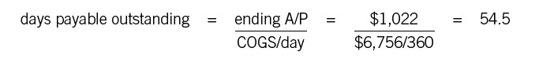

Efficiency Ratios
Making the Most of Your Assets
Efficiency ratios help you evaluate how efficiently you manage certain key balance sheet assets and liabilities. The phrase managing the balance sheet may have a peculiar ring, especially since most managers are accustomed to focusing only on the income statement. But think about it: the balance sheet lists assets and liabilities, and these assets and liabilities are always in flux. If you can reduce inventory or speed up collection of receivables, you will have a direct and immediate impact on your company’s cash position. The efficiency ratios let you know how you’re doing on just such measures of performance. (We’ll have more to say on managing the balance sheet in part 7.)
INVENTORY DAYS AND TURNOVER
These ratios can be a little confusing. They’re based on the fact that inventory flows through a company, and it can flow at a greater or lesser speed. Moreover, how fast it flows matters a lot. If you look at inventory as frozen cash, then the faster you can get it out the door and collect the actual cash, the better off you will be.
So let’s begin with a ratio sporting the catchy name days in inventory, or DII. (It’s also called inventory days.) Essentially, it measures the number of days inventory stays in the system. The numerator is average inventory, which is just beginning inventory plus ending inventory (found on the balance sheet for each date) divided by 2. (Some companies use just the ending inventory number.) The denominator is cost of goods sold (COGS) per day, which is a measure of how much inventory is actually used in each day. The formula and sample calculation:
(Financial folks tend to use 360 as the number of days in a year, just because it’s a round number.) In this example, inventory stayed in the system for 74.2 days. Whether that’s good or bad, of course, depends on the product, the industry, the competition, and so on.
Inventory turns, the other inventory measure, is a measure of how many times inventory turns over in a year. If every item of inventory was processed at exactly the same rate, inventory turns would be the number of times per year you sold out your stock and had to replenish it. The formula and sample calculation are simple:
In the example, inventory turns over 4.85 times a year. But what are we actually measuring here? Both ratios are a measure of how efficiently a company uses its inventory. The higher the number of inventory turns—or the lower the inventory days—the tighter your management of inventory and the better your cash position. So long as you have enough inventory on hand to meet customer demands, the more efficient you can be, the better. In the four quarters ending in September 2011, Target Stores had inventory turns of 4.9—a fair number for a big retailer. But Walmart’s turns were 7.6, much better. In the retail business, a difference in the inventory turnover ratio can mean the difference between success and failure; both Target and Walmart are successful, though Walmart is certainly in the lead. If your responsibilities are anywhere near inventory management, you need to be tracking this ratio carefully. (And even if they aren’t, there’s nothing to stop you from raising the issue: “Hey, Sally, how come there’s been an uptick in our DII recently?”) These two ratios are key levers that can be used by financially intelligent managers to create a more efficient organization.
DAYS SALES OUTSTANDING
Days sales outstanding, or DSO, is also known as average collection period and receivable days. It’s a measure of the average time it takes to collect the cash from sales—in other words, how fast customers pay their bills.
The numerator of this ratio, usually, is ending accounts receivable, taken from the balance sheet at the end of the period you’re looking at. (Why “usually”? In some circumstances, A/R may spike at the end of a period, so the accountants may then use average A/R as the numerator.) The denominator is revenue per day—just the annual sales figure divided by360. The formula and sample calculation look like this:
In other words, it takes this company’s customers an average of about fifty-four days to pay their bills.
Right there, of course, is an avenue for rapid improvement in a company’s cash position. Why is it taking so long? Are customers unhappy because of product defects or poor service? Are salespeople too lax in negotiating terms? Are the receivables clerks demoralized or inefficient? Is everybody laboring with outdated financial management software? DSO does tend to vary a good deal by industry, region, economy, and seasonality, but still: if this company could get the ratio down to forty-five or even forty days, it would improve its cash position considerably. This is a prime example of a significant phenomenon; namely, that careful management can improve a business’s financial picture even with no change in its revenues or costs.
DSO is also a key ratio for the folks who are doing due diligence on a potential acquisition. A high DSO may be a red flag in that it suggests that customers aren’t paying their bills in a timely fashion. Maybe the customers themselves are in financial trouble. Maybe the target company’s operations and financial management are poor. Maybe there is some fast-and-loose financial artistry going on. We’ll come back to DSO in part 7 on the management of working capital; for the moment, note only that it is by definition a weighted average. So it’s important that the due diligence folks look at the aging of receivables—that is, how old specific invoices are and how many there are. It may be that a couple of unusually large and unusually late invoices are skewing the DSO number.
DAYS PAYABLE OUTSTANDING
The days payable outstanding (DPO) ratio shows the average number of days it takes a company to pay its own outstanding invoices. It’s sort of the flip side of DSO. The formula is similar: take ending accounts payable and divide by COGS per day:

In other words, this company’s suppliers are waiting a long time to get paid—about as long as the company is taking to collect its receivables.
So what? Isn’t that the vendors’ problem to worry about, rather than this company’s managers? Well, yes and no. The higher the DPO, the better a company’s cash position, but the less happy its vendors are likely to be. A company with a reputation for slow pay may find that top-of-the-line vendors don’t compete for its business quite so aggressively as they otherwise might. Prices might be a little higher, terms a little stiffer. A company with a reputation for prompt thirty-day payment will find the exact opposite. Watching DPO is a way of ensuring that the company is sticking to whatever balance it wants to strike between preserving its cash and keeping vendors happy.
PROPERTY, PLANT, AND EQUIPMENT TURNOVER
This ratio tells you how many dollars of sales your company gets for each dollar invested in property, plant, and equipment (PPE). It’s a measure of how efficient you are at generating revenue from fixed assets such as buildings, vehicles, and machinery. The calculation is simply total revenue (from the income statement) divided by ending PPE (from the balance sheet):
By itself, $3.90 of sales for every dollar of PPE doesn’t mean much. But it may mean a lot when compared with past performance and with competitors’ performance. A company that generates a lower PPE turnover, other things being equal, isn’t using its assets as efficiently as a company with a higher one. So check the trend lines and the industry averages to see how your company stacks up.
But please note that sneaky little qualifier, “other things being equal.” The fact is, this is one ratio where the art of finance can affect the numbers dramatically. If a company leases much of its equipment rather than owning it, for instance, the leased assets may not show up on its balance sheet. Its apparent asset base will be that much lower and PPE turnover that much higher. Some companies pay bonuses pegged to this ratio, which gives managers an incentive to lease equipment rather than buy it. Leasing may or may not make strategic sense for any individual enterprise. What doesn’t make sense is to have the decision made on the basis of a bonus payment. Incidentally, a lease must meet specific requirements to qualify as an operating lease (which may not show up on the balance sheet) as opposed to a capital lease (which does). Check with your finance department before entering into any kind of lease.
TOTAL ASSET TURNOVER
This is the same idea as the previous ratio, but it compares revenue with total assets, not just fixed assets. (Total assets, remember, includes cash, receivables, and inventory as well as PPE and other long-term assets.) The formula and calculations:
Total asset turnover gauges not just efficiency in the use of fixed assets, but efficiency in the use of all assets. If you can reduce inventory, total asset turnover rises. If you can cut average receivables, total asset turnover rises. If you can increase sales while holding assets constant (or increasing at a slower rate), total asset turnover rises. Any of these managing-the-balance-sheet moves improves efficiency. Watching the trends in total asset turnover shows you how you’re doing.
There are many more ratios than these, of course. Financial professionals of all sorts use a lot of them. Investment analysts do, too, as we’ll see in chapter 25. Your own organization is likely to have specific ratios that are appropriate for the company, the industry, or both. You’ll want to learn how to calculate them, how to use them, and how you affect them. But those we have outlined here are the most common for most working managers.